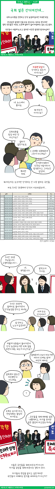

국회 일은 산더미인데...

최근 자유한국당의 단식 농성이 엄청 이슈가 되고 있네요.
이유가 5시간 30분씩 릴레이로 단식한다는 내용인데요. 이게 과연 단식이 맞느냐? 라는 이유로 엄청 화제가 되고 있어요. 목적은 관심없는 분들, 손혜원 건으로 아는분들, 정부반대한다고만 아는 분들 등..
이런 상황이면 아무리 봐도 누워서 침 뱉기 같은데 한국당 의원들을 잘 모르는 걸까요?
그런데 신기한건 최근 여론조사가 나왔는데 한국당의 지지율이 많이 올랐더군요. 그리고 민주당의 지지율은 40%대가 깨져버렸고요. 정권이 바뀌어도 차이가 없다는 생각인 걸까요? 참 아이러니 합니다.